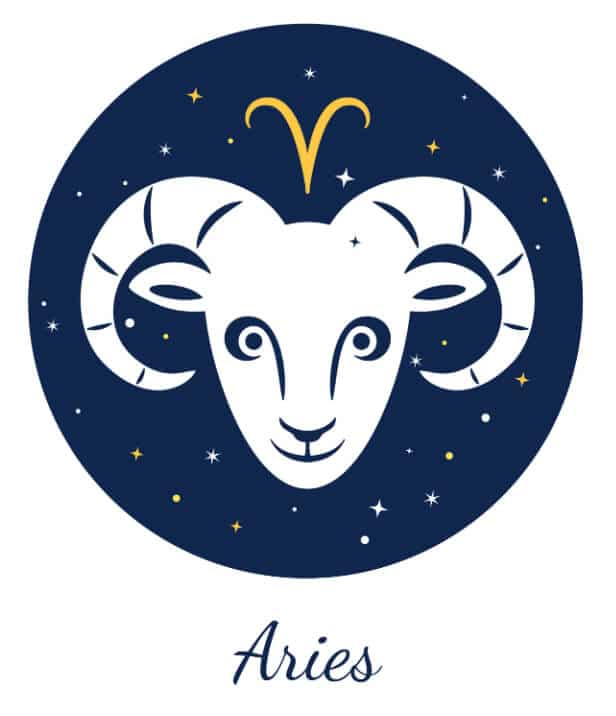

←
ARIES AND SAGITTARIUS COMPATIBILITY-



Aries and Sagittarius Nature and Nuances:
Communication :
Pros of the Aries and Sagittarius Relationship:
The physical as well as emotional intimacy that these signs share is second to none. The chemistry that Aries and Sagittarius build with each other in the bedroom churns out something exciting and exhilarating for the duo, almost every time.
Both of them are short tempered and are likely to bicker every now and then. However, the best thing about the same is that Aries and Sagittarius do not hold grudges for too long and forgive easily. This helps them get over any argument with ease and avoid letting it hamper the growth of their bond.
It is almost as if the two fire signs have enduring reserves of energy and will never run out of the same. However, if one of them does feel the gloom from time to time, the other is aware and understanding enough to lift his/her partner’s spirits almost immediately.
Cons of the Aries and Sagittarius Relationship:
Both Aries and Sagittarius have an immense sense of pride and cannot back down from a fight. While these are good things more often than not, they might strain their relationship from time to time. When an argument does ensue from mutual differences, they will end up saying harsh words to each other and will fight ceaselessly without looking for a compromise.
The possessiveness of the Ram might become infuriate the Sagittarius zodiac, who loves independence more than anything else in the world. On the other hand, the Archer’s reckless behaviour might frustrate the Aries from time to time.
Love :
Both Aries man and Sagittarius woman have an extremely ebullient personality that is filled with liveliness and optimism. Their shared positive outlook on life helps them push each other in times of difficulties, while keeping unnecessary negativity away from Sagittarius and Aries relationship.
These signs are passionate, aggressive, and extremely extroverted. They will not take time to fall for each other and it is likely that their relationship will move at a quicker pace than expected.
The Aries is attracted to the free spirit and unflinching individuality of the Sagittarius. The Archer, on the other hand, falls for the powerful persona and unwavering confidence of the Ram, which also makes the association between the Sagittarius man and Aries woman a reliable one.
Compatibility:
Sagittarius is a social, friendly, adventurous, dynamic, and philosophical zodiac sign. It comes ninth on the astrological chart and is symbolized by the Archer. Since Sagittarius is a fire sign, those born under Sagittarius traits are enthusiastic, energetic, and never apprehensive about taking the limelight. They are natural entertainers.
Aries sun sign are strong-willed, extroverted, and ambitious individuals who have natural leadership qualities instilled in them. This Fire sign is not afraid to go out and materialize its dreams. Those born under it are optimistic and passionate people and are brutally honest at all times.
- The physical as well as emotional intimacy that these signs share is second to none. The chemistry that Aries and Sagittarius build with each other in the bedroom churns out something exciting and exhilarating for the duo, almost every time.
Both of them are short tempered and are likely to bicker every now and then. However, the best thing about the same is that Aries and Sagittarius do not hold grudges for too long and forgive easily. This helps them get over any argument with ease and avoid letting it hamper the growth of their bond.
It is almost as if the two fire signs have enduring reserves of energy and will never run out of the same. However, if one of them does feel the gloom from time to time, the other is aware and understanding enough to lift his/her partner’s spirits almost immediately.
- Both Aries and Sagittarius have an immense sense of pride and cannot back down from a fight. While these are good things more often than not, they might strain their relationship from time to time. When an argument does ensue from mutual differences, they will end up saying harsh words to each other and will fight ceaselessly without looking for a compromise.
The possessiveness of the Ram might become infuriate the Sagittarius zodiac, who loves independence more than anything else in the world. On the other hand, the Archer’s reckless behaviour might frustrate the Aries from time to time.